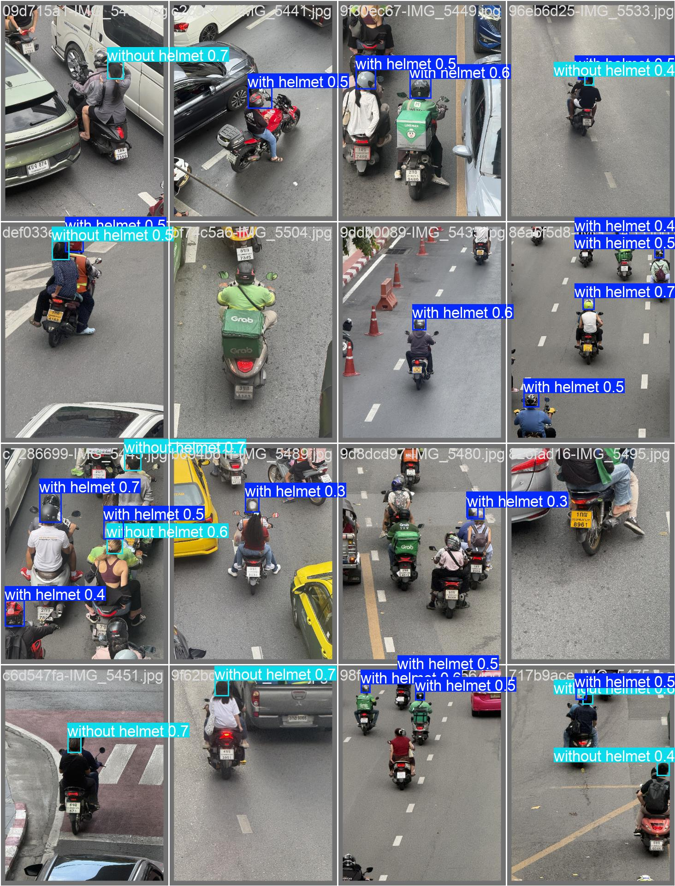
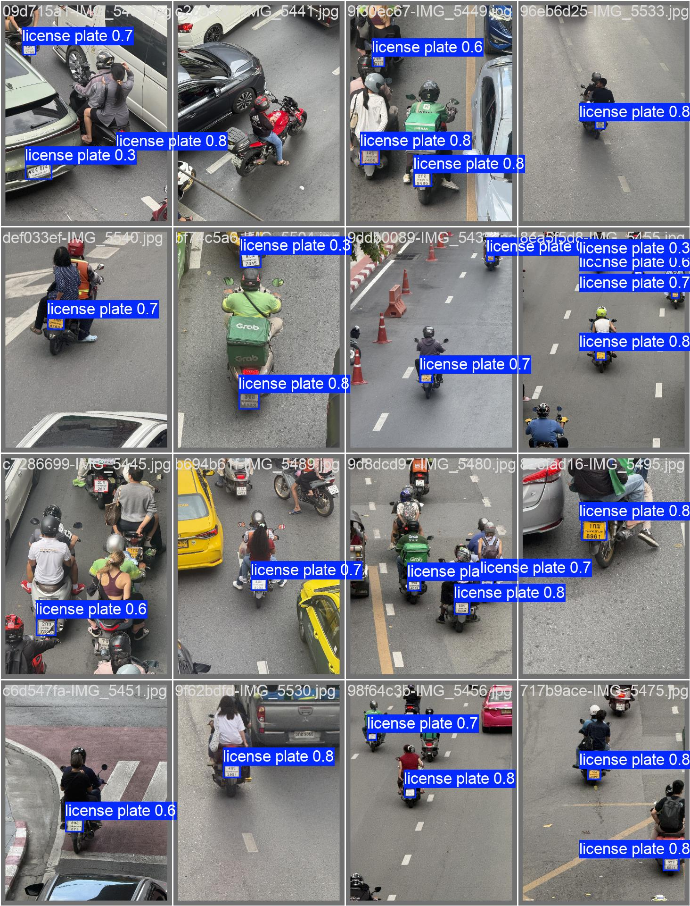
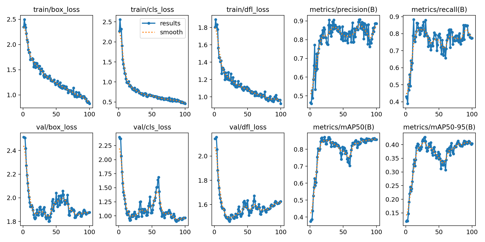
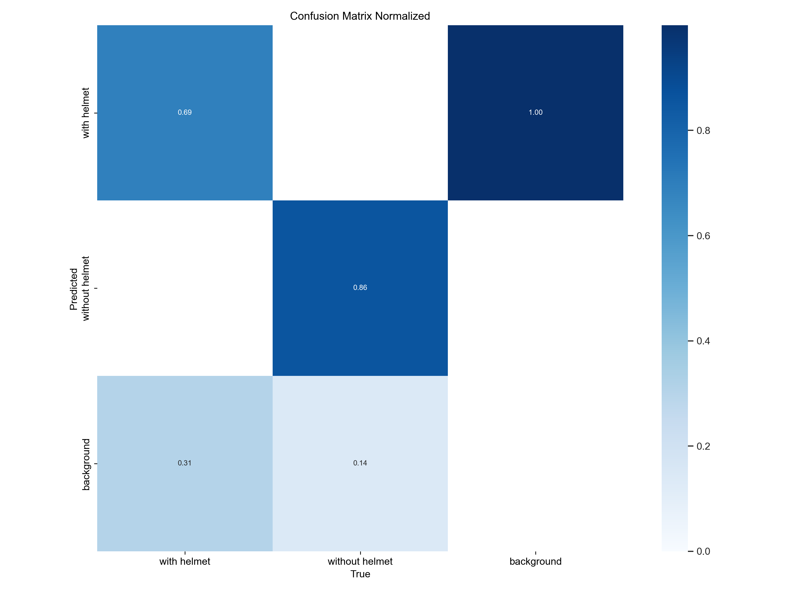
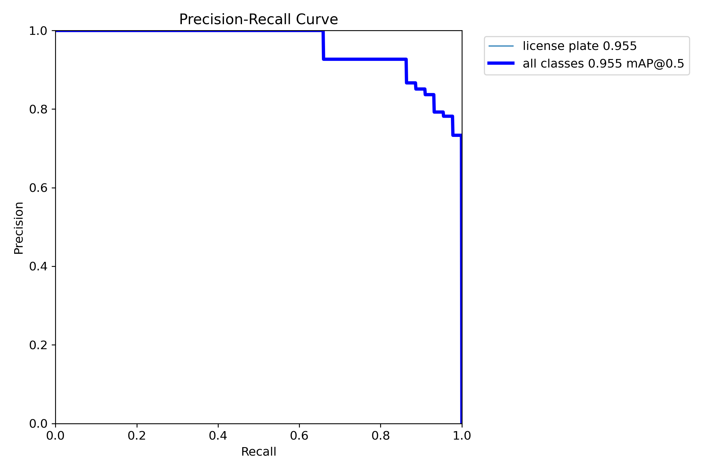

First fine-tuning round for SafeRide's detection models, trained on 111 frames labeled from our Thai traffic videos. Same 3-model pipeline, better weights.
July 11, 2026 · Ultralytics YOLO · NVIDIA RTX 4070 SUPER
The baseline helmet and plate models were trained on other countries' datasets. They've never seen Thai near-square motorcycle plates, our camera angles, or our lighting.
Distant no-helmet heads get missed, and helmet / no-helmet labels flicker between frames — the tracker's voting system spends its budget suppressing noise instead of confirming violations.
Loose or low-confidence plate boxes produce bad crops, and OCR accuracy is capped by crop quality no matter how good the reader is.
Fine-tuning adapts the two specialist models to the exact footage the system sees in production — the highest-leverage accuracy work available to us.
The 5-class export is split into per-model datasets with remapped class IDs: helmet (with / without helmet) and plate (license plate). Both share the same 80/20 split so validation frames are held out consistently. Frames without a model's classes stay in as background images — they teach the model what not to detect.
Motorcycle — detection stays on COCO-pretrained YOLO11s, which is already strong. No License Plate — the pipeline has no "missing plate" violation type yet; these labels wait for that feature.
Association logic, ByteTracker, helmet voting, crop inference, dedup — all unchanged. Training only improves what goes into them.
Everything lives in an isolated
training/ folder. The running app is unaffected until weights are deliberately promoted.
Isolated workspace
Dataset prep, generated datasets, and run outputs all write to training/ only —
datasets and weights are git-ignored, the backend and models/ stay untouched.
A/B testing without file changes
The backend reads model paths from environment variables, so new weights can be evaluated with
HELMET_MODEL_PATH / PLATE_MODEL_PATH set for one shell session — no config edits.
Promotion is a deliberate act
Only if end-to-end evaluation favors the new weights do the two paths in
backend/app/core/config.py change. Until then: vacuum.
AutoBatch picked batch 51 at 60% VRAM utilization (~6.7 GB of 12 GB). Mixed precision (AMP) on. Each epoch: ~1–2 seconds.
First attempt died mid-epoch: PyTorch's 8 worker processes exited unexpectedly — a well-known Windows multiprocessing failure mode.
workers=0Data loading moved to the main process. On an 89-image dataset the speed cost is negligible; the rerun completed all 200 epochs cleanly.
Total wall time for both models, including validation and plots: about 15 minutes.
scale 0 → 1.0 · validation split (22 images)
| class | boxes | precision | recall | mAP50 |
|---|---|---|---|---|
| with helmet | 36 | 0.81 | 0.69 | 0.82 |
| without helmet | 21 | 1.00 | 0.90 | 0.92 |
| license plate | 44 | 0.93 | 0.85 | 0.96 |


Never trust mAP alone — these prediction grids are compared box-by-box against the label grids in training/runs/.



scripts/evaluate.py with old vs. new weights on labeled clips; compare event-level precision/recall, plate capture, OCR accuracy.best.pt into models/, update two config paths.The weights are staged at training/runs/helmet-v1/weights/best.pt and
training/runs/plate-v1/weights/best.pt — one decision away from production.